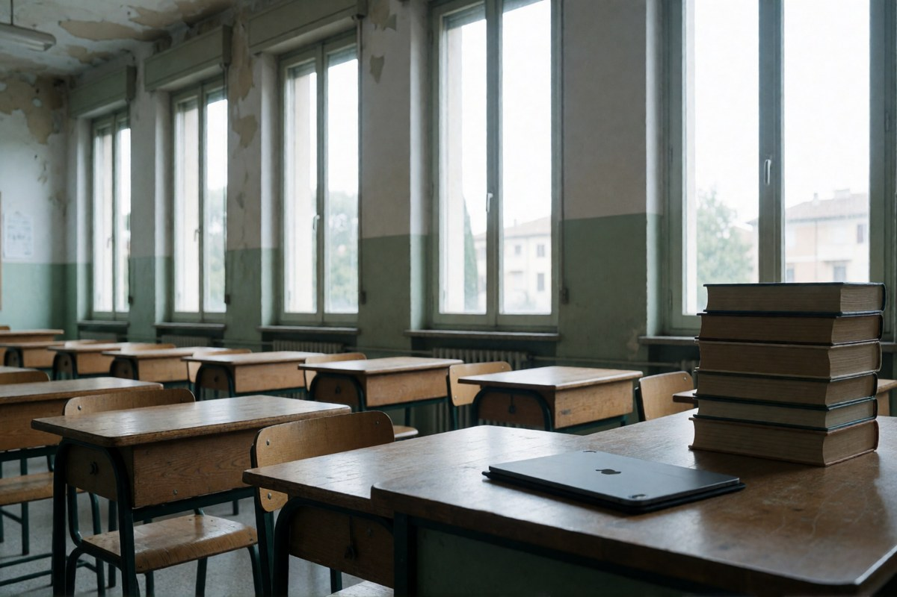
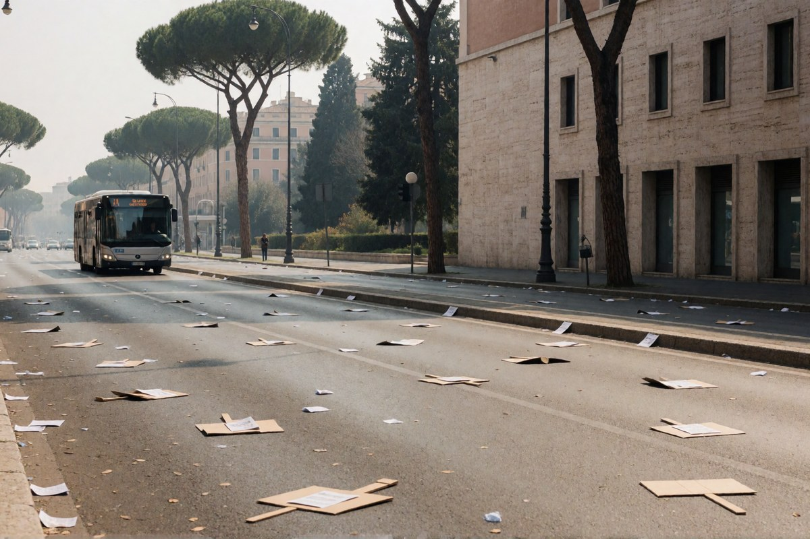

Politica italiana · 21 novembre 2026
La scuola o il governo? L'editoriale del Tempo sul corteo

Sul Tempo il vicedirettore Alessio Gallicola chiede contro che cosa siano scesi in piazza gli studenti, proprio mentre il Senato approva i libri digitali a metà prezzo. L'editoriale per gli abbonati, con il commento dell'autore.
di Franco Zanghì
Contro che cosa sono scesi in piazza, davvero, gli studenti? Venerdì 20 novembre sono tornati a manifestare, a Roma con un corteo partito dalla Piramide, contro quella che chiamano la cattiva gestione della scuola. E sabato, sul Tempo, il vicedirettore Alessio Gallicola ha posto la domanda senza giri di parole: protesta per la scuola, o manifestazione politica contro il governo?
I fatti
Giovedì 19 novembre il Senato ha approvato, dentro il decreto Scuola, un emendamento di Fratelli d'Italia che obbliga gli editori a vendere la versione digitale dei libri scolastici e universitari ad almeno la metà del prezzo dell'edizione di carta. È passato con 84 sì e 76 no. Con un dettaglio che pesa: Forza Italia ha votato contro, insieme all'opposizione, mentre Azione ha votato a favore.
Secondo Il Tempo il risparmio per le famiglie è di circa 200 euro l'anno. E nei giorni prima, ricorda Gallicola, il governo aveva evitato il taglio di quasi settemila posti fra docenti e personale Ata.

La tesi
Scendere in piazza per la scuola ignorando una misura che alleggerisce il caro libri, scrive Gallicola, è «quantomeno singolare». Poi c'è il corteo, con le bandiere della Palestina accanto agli striscioni: che cosa c'entri Gaza con i bagni e i soffitti delle scuole, osserva, nessuno lo spiega. La conclusione è netta: è «opposizione politica mascherata da rivendicazione scolastica».
Il capitolo lasciato sullo sfondo
C'è però un passaggio che l'editoriale non affronta. Il giorno dopo il voto Forza Italia ha depositato alla Camera un emendamento per cancellare lo sconto, a tutela — spiega — della filiera dell'editoria. Matteo Salvini ha difeso la norma e ha definito «bizzarra» quella divisione.
Il commento
Su un punto Gallicola ha ragione. Duecento euro a famiglia non sono uno slogan, e chi scende in piazza per la scuola senza dire una parola su una misura che aiuta le famiglie si espone al sospetto. Anche le bandiere di un'altra guerra, in un corteo sulla scuola, togliono forza alle ragioni dei ragazzi.
Andrei più piano, però, sull'idea che sia tutta politica. Le aule fredde e gli intonaci che cadono sono veri, e molti di quei ragazzi li vivono ogni mattina: portino i numeri e i nomi delle scuole. Su quel terreno sarebbero difficili da contraddire.
E al centrodestra va detto che il colpo più duro a quei duecento euro non è arrivato dal corteo, ma dalla maggioranza. La domanda di Gallicola resta. Eccone un'altra, per chi governa: quando il decreto arriverà alla Camera, quei duecento euro ci saranno ancora?
Fonti
- Alessio Gallicola, «Governo, se la scuola diventa il pretesto per l'opposizione politica», Il Tempo, 21 novembre 2026
- Il Giornale, «Libri digitali, Forza Italia non arretra: alla Camera l'emendamento per cancellare la norma di FdI», novembre 2026
- La Nuova Sardegna, «Ebook scolastici a metà prezzo, decreto alla Camera: Forza Italia vuole cancellare la norma», 20 novembre 2026
- Diario del Web, «Ebook scolastici, Salvini difende la norma sui prezzi: Forza Italia vuole cancellarla», novembre 2026
- Il Tempo, 20 novembre 2026; Open, 19 novembre 2026; Sky TG24, 18 novembre 2026; Il Foglio, 21 novembre 2026
Articolo riferito: Alessio Gallicola, «Governo, se la scuola diventa il pretesto per l'opposizione politica», Il Tempo, 21 novembre 2026. Il decreto Scuola era in esame alla Camera alla data di pubblicazione: la norma sui libri digitali non era ancora definitiva e l'emendamento soppressivo non era stato votato.